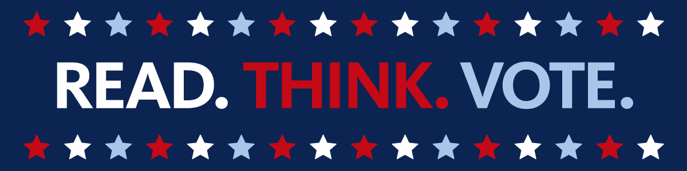

VoteNation

The lack of voting, or low voter turnout, is a significant issue in the US. Despite efforts to increase voter engagement, many Americans still choose not to vote. Some of the reasons for low voter turnout include:


🖊️ Martin Luther King, Jr. supports voting rights.
🖊️ Ida B. Wells supports voting rights.
🖊️ Fannie Lou Hamer supports voting rights.